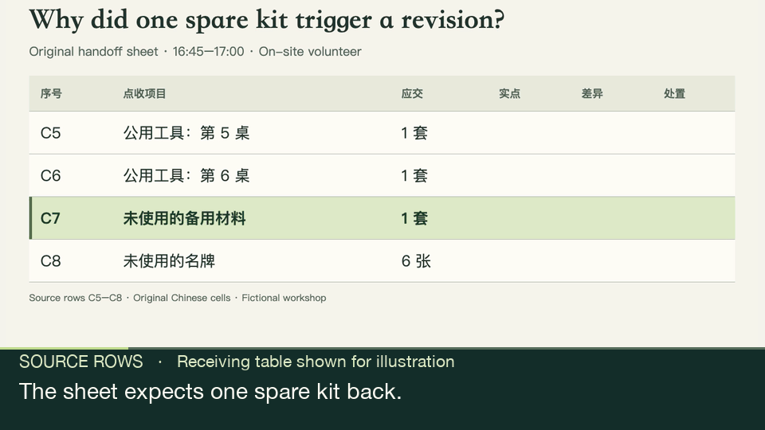

Solo to Team
Complete MAS and four platform Skill candidates
The original 16-role, six-group MAS and four Skills remain. Three rc5 Skills plus Grok design2-doc1 / adapter.5 are combined with platform adoption instructions. Matching source reproduces the same archive.
Download the current complete package · Setup and exact evidence scope
Earlier Grok design2 body and materials matched; a bounded task and manual two-Bot review were checked. The returned saved doc1 body and manifest match byte for byte, with the original header preserved. A named invocation and five readable references are self-reported; this is separate from old business evidence. Actual invocation and same-Bot new-conversation continuation remain unverified. No universal one-click team installation is promised.
中文 · Download the current complete package
Hand a half-finished project to an AI team. The lead takes the brief, a producer makes the file, and a separate reviewer opens it. Change a requirement mid-task and get the reviewed revision back in the original chat. The first-release template includes 16 roles, six suggested groups and 26 suggested memberships. Choose roles for your task and edit the roster, groups and handoffs locally. Your first task can still start with the lead, producer and reviewer.

Where did the spare kit go? The WorkBuddy exercise allowed one spare kit to be used in round two. Table two is an illustrative choice in the demo. The first handoff sheet still expected one kit back. The reviewer returned the file. The revision expects zero after use and calls for the table and time to be logged. When the kit stays unused, both versions expect one. Inspect the original cells and review evidence · Watch the 28-second demo · English and Chinese timed captions
Run your first order locally
- Download the current complete ZIP, extract into a new empty folder, and open Solo-to-Team → START-MAS-PLUS-SKILLS.html. Choose your platform and follow its adoption guide. The original MAS builder and examples remain in the package.
- Choose a platform where you already have a working model. Open 16-role team setup on the home page, choose the roles and handoffs you need, and save your team file. Export for that platform and verify its project folder and permissions. Exporting a file does not create assistants in your account.
- Send only the 20-person starting brief to the lead. After it identifies MAP-20-R1, send the change to 24 people in the same chat. Open the execution pack and independent review. Match their versions and check who counts the supplies and receives the handoff.
| Platform | Start here | Earlier three- or four-role observations |
|---|---|---|
| Grok Bot | Open the self-setup pack, check existing project Bots and create only missing seats. | In the local team’s record, a test operator read a known exercise from the recipient’s perspective and flagged a handoff issue. The existing team then revised and returned the reviewed file. |
| OpenMausBot | Preview the department in Templates → Import on 0.1.148. | A custom four-role team was imported in isolated native storage. The live order used three manually created roles. |
| WorkBuddy | Open the setup guide; choose the in-app creator or the private Mac registration route as appropriate. | A local private team produced a targeted revision; a separate reviewer checked R2. |
| DeepSeek Harness | Select the supplied workspace on 0.2.1-rc.5 and invoke /solo-to-team in a new root chat. | The standard three-role team and a custom four-role builder export both produced retained task files on this Mac. |
The table describes earlier three- or four-role tasks. It does not prove that the complete 16-role team has run on all four platforms. These are the team’s local observations and returned files. Platform-side run logs were unavailable. OpenMausBot and WorkBuddy process descriptions are team-reported; the cited worksheet entries can be checked. Independent setup success among first-time users has not been measured. This archive is a release candidate. The listed project-authored materials use MIT, including commercial use, within the scope and exclusions in NOTICE. The new candidate has local evidence for native OpenMaus import/re-export and its reviewer-assistant group chain, plus a DeepSeek Harness two-child revision and review. See this round’s 16-role record for scope, approval modes and attachment limitations.
Download the free offline exercise · Current source and historical notes